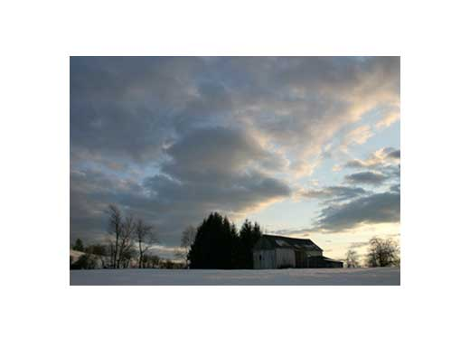

Old Barn on Martins Pond Road photo: Scott wilson 154 Lowell road, Groton
Give us your best shot!
Throughout 2013 we will feature a new image of Groton each month in the space above. Send us a phot taken anywhere in Groton and we will showcase it here. Attache a JPEG and email to grotonpix@grotonboardoftrade.com
Be sure to include the title of your image, your name and your address. We hope to hear from youl Thanks!
Next Scheduled Meeding
The next scheduled (monthly meeting of the Groton Board of Trade is Wednesday, November 28th at the Groton Pool and Golf Center (The Groton Country Club at 6:00PM. Unless something comes up, every monthly meeting is on the third Wednesday of the Month (excluding July and August when there is no meeting).